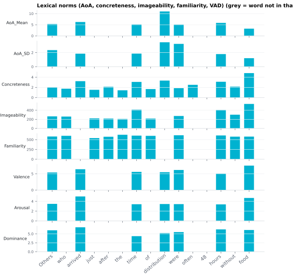

6.1.16Lexical norms (AoA, concreteness, imageability, familiarity, VAD)
Per-word psycholinguistic ratings looked up from published norm databases, keyed by lemma (with a surface-token fallback).
6.1.16.1What it is
Per-word psycholinguistic ratings looked up from published norm databases, keyed by lemma (with a surface-token fallback):
| Column | Norm | What it captures |
|---|---|---|
AoA_Mean |
Age of acquisition (Kuperman 2012) | mean rated age (years) at which the word is learned |
AoA_SD |
" | rater dispersion of the AoA estimate (quality/weight) |
Concreteness |
Brysbaert 2014 | how concrete (perceptible) vs. abstract the referent is (1–5) |
Imageability |
MRC (Coltheart 1981) | how easily the word evokes a mental image |
Familiarity |
MRC | how familiar the word feels to typical readers |
Valence |
Warriner 2013 | pleasantness, 1 (unpleasant) – 9 (pleasant) |
Arousal |
" | calm (1) – excited (9) |
Dominance |
" | feeling controlled (1) – in control (9) |
Out-of-vocabulary words and punctuation are NaN (never imputed — a blank
means "no norm available", and downstream code decides how to handle it).
Coverage — distinct words in each table built by download_lexical_norms.py:
| Norm | Words |
|---|---|
| AoA (Kuperman) | 30,121 |
| Concreteness (Brysbaert) | 39,954 |
| Valence / Arousal / Dominance (Warriner) | 13,905 |
| Imageability / Familiarity (MRC) | 4,890 |
MRC's rated subset is small (~4,900 words), so imageability/familiarity will be
NaN for many tokens — the document-level *_coverage stats report the match
rate per stimulus. Concreteness (~40k words) correlates ≈0.9 with imageability
(r = .91 across 5,553 words in the Glasgow Norms Scott 2019)
and covers far more vocabulary, so it is usually the better choice when
coverage matters.
6.1.16.2See it

6.1.16.3In your output
| token | AoA_Mean | AoA_SD | Concreteness | Imageability | Familiarity | Valence | Arousal | Dominance |
|---|---|---|---|---|---|---|---|---|
| Others | 5.33 | 2.35 | 2.04 | 265 | 581 | 5.41 | 3.48 | 6 |
| who | 1.74 | 261 | 599 | |||||
| arrived | 6.26 | 1.85 | 3.22 | 6.41 | 5 | 6.84 | ||
| just | 1.52 | 221 | 540 | |||||
| after | 2.12 | 217 | 575 | |||||
| the | 1.43 | 209 | 625 | |||||
| time | 5.16 | 1.86 | 3.07 | 413 | 604 | 5.6 | 3.41 | 4.36 |
| of | 1.67 | 217 | 598 | |||||
| distribution | 11 | 3.46 | 3.33 | 5.5 | 3.45 | 5.21 | ||
| were | 5.11 | 3.23 | 1.85 | 274 | 613 | 6.18 | 3.43 | 5.5 |
| often | 2.5 | |||||||
| 48 |
6.1.16.4MATLAB
% Load the word-level table (one row per word)
T = readtable('word/LJ002-0321_features.csv', 'TextType', 'string');
T.Properties.VariableNames % every column in the file
T(1:10, {'token', 'AoA_Mean', 'AoA_SD', 'Concreteness', 'Imageability', 'Familiarity', 'Valence', 'Arousal', 'Dominance'}) % this feature's columns
% Plot
w = ~T.upos == "PUNCT";
subplot(3,1,1); bar(T.AoA_Mean(w)); ylabel('AoA_Mean')
subplot(3,1,2); bar(T.AoA_SD(w)); ylabel('AoA_SD')
subplot(3,1,3); bar(T.Concreteness(w)); ylabel('Concreteness')
xticks(1:nnz(w)); xticklabels(T.token(w))
6.1.16.5What each rating is, and how it was made
Each value is a human rating averaged over many people — a behavioural norm, not a corpus statistic. Knowing exactly how each was collected is what lets you justify using it.
-
AoA (
AoA_Mean/AoA_SD, Kuperman 2012). Subjective, retrospective age of acquisition. ~30k words; each rated by ~20 adults on Amazon Mechanical Turk who estimated, in years, the age at which they learned the word.AoA_Meanis the mean of those estimates,AoA_SDtheir disagreement. It is an adult's recollection of when a word was learned, not an objective developmental record — but it predicts processing speed and N400 amplitude well, which is why it is used. Lower = learned earlier. -
Concreteness (
Concreteness, Brysbaert 2014). How far a word's referent can be experienced through the senses and actions. ~40k words, 4,000+ Mechanical Turk raters (~25 per word), on a 1 (abstract) – 5 (concrete) scale. Concrete = something you can see, hear, feel, taste, smell, or act on (dog, run); abstract = something whose meaning is carried by language and cannot be sensed directly (truth, justice). Raters leaned mostly on visual/haptic experience. -
Imageability (
Imageability, MRC — Coltheart 1981). How readily the word evokes a mental image. Originally rated on a 1–7 scale (1 = arouses an image slowly or not at all; 7 = arouses an image immediately), pooled in the MRC database from classic norm sets (Paivio, Yuille & Madigan 1968; Toglia & Battig 1978; Gilhooly & Logie 1980) and rescaled to 100–700 (the 1–7 mean × 100; so636≈ 6.36/7). Related to concreteness but not identical: some abstract words (ghost, heaven) are highly imageable. -
Familiarity (
Familiarity, MRC — Coltheart 1981). Subjective familiarity — how familiar / often-encountered a word feels — rated 1–7 and rescaled to 100–700. This is a perceptual judgement of frequency, distinct from corpus frequency (Zipf_Freq); the two can diverge, which is exactly why familiarity is a useful complementary control. -
Valence / Arousal / Dominance (
Valence/Arousal/Dominance, Warriner 2013). The three dimensions of affective meaning, extending Bradley & Lang's ANEW. ~14k words rated on the 9-point Self-Assessment Manikin (SAM) scale by Mechanical Turk participants (~20 per word):- Valence = pleasantness, 1 (unhappy/unpleasant) – 9 (happy/pleasant).
- Arousal = emotional intensity, 1 (calm/relaxed) – 9 (excited/aroused).
- Dominance = how much control the word's referent makes you feel, 1 (controlled/submissive) – 9 (in control/dominant).
6.1.16.6Document-level aggregates
Enabling Aggregates → Lexical-norm aggregates (doc_agg_lexical_norms)
adds, computed over content words (NOUN/VERB/ADJ/ADV/PROPN):
mean_aoa,median_aoa,max_aoa,sd_aoaprop_late_acquired— fraction of (AoA-matched) content words withAoA_Meanabove the late-acquired threshold (default 10 yrs, configurable vialexical_norms.late_acquired_threshold); an arbitrary convention, documented as such.mean_concreteness,mean_imageability,mean_familiarity,mean_valence,mean_arousal,mean_dominance- per-norm coverage (blank when the document has no content words):
aoa_coverage,concreteness_coverage, … (fraction of content tokens that matched the norm — read these to judge how trustworthy each mean is).
Relative AoA (analysis-time, not a stored column)
A useful derived variable for developmental studies is
relative_aoa = AoA_Mean − participant_age (years): a word's difficulty
relative to the listener. SensiExtractor never sees participant age, so this
is computed downstream by joining the stimulus AoA_Mean with participant
metadata. Suggested uses: an AoA × age interaction term, an above/below-age
word contrast, or a document-level proportion-above-age covariate. Caveat:
AoA is an adult-rated population norm, not a measure of the individual
listener's vocabulary.
Using AoA_SD. AoA_SD measures how much raters disagreed about a
word's age of acquisition — i.e. the reliability of AoA_Mean. A word raters
place at the same age (small SD) is a trustworthy estimate; a word they
scatter on (large SD) is noisy. Use it to weight or filter words, not to
rescale relative_aoa:
relative_aoa = AoA_Mean − participant_age # the predictor, in years
weight = 1 / AoA_SD² # precise words count more
Fit a weighted regression in which each word contributes in proportion to its
weight (or simply drop words whose AoA_SD exceeds a cutoff). Do not
use relative_aoa / AoA_SD: that divides by rater disagreement — not the
spread of AoA across words — and would make the words people most disagreed on
appear closest to the listener's age. (This is why AoA_SD ships as its own
column.)
6.1.16.7In the code
Source: sensi/extractors/lexical_norms.py:add_lexical_norms. For each source it
loads a parquet (cached), indexes by word, and does a vectorized
reindex lookup on lemma.lower(), falling back to token.lower() where the
lemma misses. PUNCT rows are excluded. MRC gotcha: a stored 0 in MRC's
imageability/familiarity fields means "missing" and is converted to NaN on
load. Document-level aggregates live in
sensi/utils/doc_summary.py:_lexical_norm_aggregates.
6.1.16.8Library
from extractors.lexical_norms import add_lexical_norms
df = add_lexical_norms(df, paths={
'aoa': 'data/dictionaries/aoa_kuperman.parquet',
'concreteness': 'data/dictionaries/concreteness_brysbaert.parquet',
'mrc': 'data/dictionaries/mrc.parquet',
'warriner': 'data/dictionaries/warriner_vad.parquet',
})
6.1.16.9EEG rationale
In word-level EEG analyses — whether averaged ERPs or regression/TRF models of continuous speech and reading — each word is described by a row of predictors and the neural response is modeled as a function of them. Lexical norms are the standard psycholinguistic predictors in that row. Their value is twofold: they let you test a lexical property directly, and they let you control the many correlated properties that also drive word processing. Without them an N400 effect you credit to predictability may actually reflect concreteness, frequency, or age of acquisition — so these columns are what make a word-level effect interpretable.
Concretely:
- AoA — earlier-acquired words are recognized faster. AoA independently predicts eye-fixation durations in natural reading (Juhasz 2003, Dirix 2017) and N400 amplitude (Yum 2019) over and above frequency, so it serves both as a developmental-exposure variable of interest and as a covariate to partial out of frequency / predictability effects.
- Concreteness / imageability — concrete, imageable words recruit richer perceptual representations and modulate the N400 differently from abstract ones (Barber 2013); the standard semantic covariate.
- Valence / arousal / dominance — the core affective dimensions. Arousal appears early in the early posterior negativity (EPN), with interactive arousal × valence effects (Citron 2012 review; Recio 2014) — essential whenever a stimulus contains emotional language, whether as an effect or a nuisance regressor.
- Familiarity — subjective experience with a word; a classic control entered alongside frequency.
At the document level the same norms become passage descriptors — mean concreteness, mean/spread of AoA, proportion of late-acquired vocabulary — used to match or control stimuli (e.g. checking that two conditions don't differ in average word difficulty) and to relate passage-level neural measures to passage-level language properties.
⚠️ Modeling caution. AoA, frequency, familiarity, word length and concreteness "tend to be correlated in natural language" Juhasz 2003, which is why that study hand-picked stimuli to keep them apart. In large norm sets, AoA "correlated strongly with word frequency" Kuperman 2012, AoA–familiarity r = −.67 and concreteness ↔ imageability r = .91 Scott 2019. Don't enter collinear norms in one model without checking VIF or residualizing/PCA first. The length-like norms are best treated as control regressors, not effects of interest.
6.1.16.10Papers
- Kuperman 2012 Kuperman, Stadthagen-Gonzalez, Brysbaert. Age-of-acquisition ratings for 30,000 English words. Behavior Research Methods 44, 978–990. doi:10.3758/s13428-012-0210-4
- Brysbaert 2014 Brysbaert, Warriner, Kuperman. Concreteness ratings for 40 thousand generally known English word lemmas. Behavior Research Methods 46, 904–911. doi:10.3758/s13428-013-0403-5
- Coltheart 1981 Coltheart. The MRC Psycholinguistic Database. Quarterly J. Experimental Psychology 33A, 497–505. doi:10.1080/14640748108400805 — imageability & familiarity.
- Warriner 2013 Warriner, Kuperman, Brysbaert. Norms of valence, arousal, and dominance for 13,915 English lemmas. Behavior Research Methods 45, 1191–1207. doi:10.3758/s13428-012-0314-x
- Barber 2013 Barber, Otten, Kousta, Vigliocco. Concreteness in word processing: ERP and behavioral effects in a lexical decision task. Brain & Language 125(1), 47–53. doi:10.1016/j.bandl.2013.01.005
- Juhasz 2003 Juhasz & Rayner. Investigating the effects of a set of intercorrelated variables on eye fixation durations in reading. JEP:LMC 29(6), 1312–1318. doi:10.1037/0278-7393.29.6.1312
- Dirix 2017 Dirix & Duyck. The first- and second-language age of acquisition effect in first- and second-language book reading. JML 97, 103–120. doi:10.1016/j.jml.2017.07.012
- Yum 2019 Yum & Law. Interactions of age of acquisition and lexical frequency effects… An ERP study. Psychophysiology 56(10), e13433. doi:10.1111/psyp.13433
- Citron 2012 Citron. Neural correlates of written emotion word processing: a review… Brain & Language 122(3), 211–226. doi:10.1016/j.bandl.2011.12.007
- Recio 2014 Recio, Conrad, Hansen, Jacobs. On pleasure and thrill: the interplay between arousal and valence… Brain & Language 134, 34–43. doi:10.1016/j.bandl.2014.03.009
- Scott 2019 Scott, Keitel, Becirspahic, Yao, Sereno. The Glasgow Norms: Ratings of 5,500 words on nine scales. Behavior Research Methods 51, 1258–1270. doi:10.3758/s13428-018-1099-3 — inter-scale correlations (Table 5, Spearman): concreteness–imageability .91, AoA–familiarity −.67.